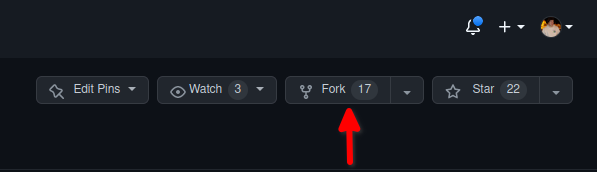

Hozzájárulás az anyaghoz¶
Az anyag terjedelméből adandóan apróbb hibák esetenként hiányosságok jelentkezhetnek a laborokban. Ha egy ilyennel találkozol és úgy döntesz szeretnél segíteni hallgatótársaidnak, azt a következőkben leírtak alapján tudod megtenni.
Plusz pont jegyzet javításért
Más tantárgyak mintájára itt is szeretnénk plusz pontot adni a jegyzet open-source hozzájárulásaiért. Akik a tárgyat jelenleg hallgatják, pontokat kaphatnak hozzájárulásaikérrt.
A félév során max 3 db plusz pontot lehet szerezni fejenként olyan javításokért, amik a triviális 1-2 betű elgépelésen túl érdemben javítanak a githubon található labor jegyzetek minőségén. Pl.: jelentős mennyiségű elgépelés javítása, egyértelműsítések, illusztrációk kiegészítések készítése vagy akár egy teljes kiegészítő jegyzet írása (természetesen nem azonos pontértékkel).
Persze a pont nélkül az 1-1 betűs elgépeléseket is szívesen fogadjuk, ami bemelegítésnek is tökéletes.
Hibák jelzése¶
Amennyiben hibát találsz az anyagban, vagy szeretnéd bővíteni, de nem áll módodban javítani, nyithatsz egy issue-t amiben leírod a hibát.
- Nézd meg, hogy valaki nem jelezte-e, amit szeretnél. Gyakran már létező problémákat találnak, amire már van pull request, így mielőtt bármit tennél nézd meg valaki nem előzött-e meg
- Az issues tabon a new issue gombbal hozz létre egy új issue-t.

- Lásd el a megfelelő címkékkel
- A labor típusa (
androidaz androidos laboroknál ésweba webes laboroknál) - A hiba típusa (
clarification,typo,illustrationvagynotes)
- A labor típusa (
- Írd le, hogy mit kéne tartalmaznia a javításnak
Tip
Az címe legyen rövid és lényegretörő, pl.: Megfogalmazás pontosítása a 4. laborban vagy A 6. laborban a leírt kód hibásan működik Android 12-n
A issue descriptionjében pedig fejtsd ki, hol található a hiányosság, illetve ha van rá ötleted, hogy lehetne orvosolni ezt. Ha ezeken túl még screenshotot is tudsz mellékelni, az nagyban megsegíti a probléma mihamarabbi javítását.
Warning
A github issues nem a laborfeladatok megoldásával kapcsolatos problémák helye, így a "Nem tudom megoldani hogy az értesítés megérkezzen" jellegű problémákat ne itt jelezzétek, erre vannak a laboralkalmak.
Változtatások javaslása¶
Amennyiben a hozzájárulásod meg tudod valósítani indíts pull requestet
-
Forkold a repository-t a Githubon jobb felső sarokban található gombbal 
-
Végezd el a változtatásokat.
Tip
Ez nagyon hasonlóan működik a laborok beadaásához
-
Hozz létre egy branchet a saját forkodon, amin a változtatásokat el fogod végezni.
-
Ezen a branchen készítsd el a javításokat
-
Ellenőrizd, hogy ne kerüljön bele a commitba olyan file, amit az editor generált (pl.:
.ideamappa) illetve olyan file aminek nem kéne kikerülnie, pl.: Github Private Access Token -
Ha kész vagy a laborok beadásához hasonlóan indíts egy pull requestet a
VIAUAC00/laborokmasterbranchére. -
Lásd el a megfelelő címkékkel
- A labor típusa (
androidaz androidos laboroknál ésweba webes laboroknál) - A hiba típusa (
clarification,typo,illustrationvagynotes)
- A labor típusa (
- A leírásban részletezd változtatások okát. Ne felejtsd el beleírni a NEPTUN kódod a leírásba, mert így fogjuk tudni megadni a pontokat.
-
-
Valaki, akinek hozzáférése van a repositoryhoz, ellenőrzi a változtatások szükségességét, és elbírálja, hogy valóban bekerülhet az anyagba.
- A változtatásokra review-t indítunk és ha kell módosításokat fogunk kérni.
- Ha minden kért változtatás megtörtént, a hozzájárulásod belekerül az anyagba.
Code style¶
- Kotlin: a hivatalos style guide alapján
- HTML & CSS & JavaScript: A Prettier style guide alapján
- Markdown: Mivel az alap spec nem mindig a legtisztábban érthető, a markdownlint szabályai alapján, az néhány kivételével. Ezeket a
.markdownlint.yaml-ben találod, ha VSCode-ot használsz automatikusan alkalmazza őket az editor és jelzi ha nem megfelelő amit írsz.
Ezek a stílusok a tárgyban ajánlott editorokban könnyen beállíthatóak.
VSCode¶
Ajánlott extensionök:
yzhang.markdown-all-in-one: MD szinkronizált live previewDavidAnson.vscode-markdownlint: MD formázás, szabályok stb.- Prettier: HTML+CSS formázó
- Error Lens: Kiemeli a hibákat hogy gyorsabben megtaláljuk őket
Az editor beállításához nyisd meg a repo-t a gyökerében VSCode-al. A VSCode fel fogja ajánlani a két markdown extension-t.

Ha ez megtörtént, nyiss meg egy markdown dokumentumot, és használd a Ctrl+Shift+P shortcutot, a command palette megnyitásához.
Tip
A command palette a VSCode parancsaihoz nyújt hozzáférést, autocompleteeli a parancsokat és egy minimális GUI-t is biztosít.
A command palette-be keressük meg a Format Document With... menüpontot és válasszuk ki.
Ekkor egy almenübe dob az editor és kiválaszthatjuk hogy melyik formázóval formázzuk a MD dokumentumokat.
Legalul lesz egy Configure Default Formatter, válasszuk ezt.
Ezután válasszuk a markdownlint extensiont, és készen vagyunk.
Megfelelő formatter kiválasztása
Ne válaszd ki a prettiert formatterként, mert eltöri a szövegbuborékokat.
Ezen felül érdemes lehet bekapcsolni a mentés előtti formázást.
A Ctrl+, shortcuttal megnyitjuk a beállításokat, és rákeresünk arra, hogy format on save. Itt kipipáljuk a checkboxot és készen vagyunk.
Ha ehhez nem lenne türelmed, itt a json amit a settings.json-ba illesztve beállítódik minden.
{
"[markdown]": {
"editor.defaultFormatter": "DavidAnson.vscode-markdownlint",
"editor.formatOnSave": true
}
}
Ajánlások¶
Android¶
- Az androidos Kotlin és XML fileokat illetve kódrészleteket Android Studioban formázva érdemes hozzáadni az anyaghoz
- Ahhoz hogy biztosan formázva legyenek a fileok használd a Ctrl+Alt+L shortcutot
Markdown Fileok¶
- A markdown fileokat se az Android Studio se a Visual Studio Code nem rendereli alaphelyzetben. Erre a feladatra a következő extensionöket/pluginokat tudom ajánlani:
- VSCode:
yzhang.markdown-all-in-one - Android Studio: Markdown Editor